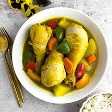

Filipino-Style Chicken Curry

Ingredients:
- 3 tablespoons olive oil
- 1 small onion, chopped
- 3 cloves garlic, minced
- ½ teaspoon grated fresh ginger
- ¼ teaspoon garlic salt
- 4 skinless, boneless chicken breast halves
- 3 tablespoons curry powder
- 1 teaspoon chicken bouillon granulesr
- 1 teaspoon ground thyme
- 2 cups water
- 1 potato, cubed
- 1 green bell pepper, chopped
Directions:
Step 1
Heat olive oil in a saucepan over medium-high heat. Stir in onion, garlic, ginger, and garlic salt.
Step 2
Add chicken breasts. Mix in curry powder; cook chicken until white, about 5 minutes. Add chicken bouillon and thyme.
Step 3
Pour water into the saucepan once chicken has browned.
Step 4
Add potatoes and simmer until softened, about 10 minutes. Stir in green bell pepper and simmer for 5 more minutes.
Nutrition Facts:
Servings per recipe: 6